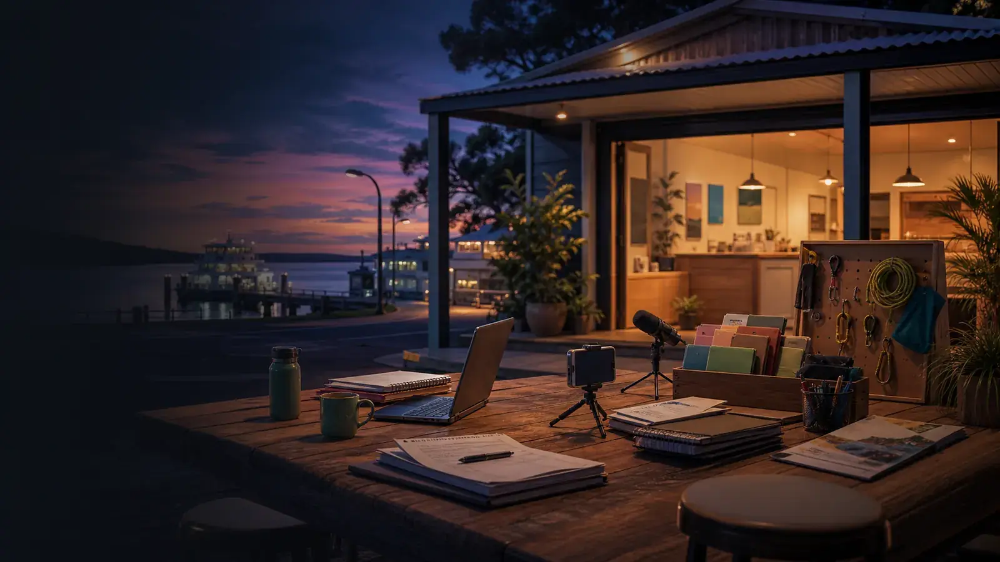

Starting on Minjerribah / Straddie
A fair go.
Built together.
A minimum viable community for a fair go in the age of superintelligence.
People, skills and shared tools to make useful things happen. Start with events, learning, local information and the work we choose together.
Taking shape with Strange but True: Tech, Art and Ideas That'll Help. The cooperative is proposed; its future members will choose its direction.

A useful place to begin
What would help
your community?
Bring a need, a skill, a business or an idea. These are the foundations we can develop together.
Events & experiences
Conferences, music, outdoor cinema, island experiences and welcoming guests.
Training & work
AI confidence, practical learning, mentors and clearly agreed paid roles.
Notices, news & media
Useful updates, local stories, shared screens and information when plans change.
Grants & project support
Turn a locally chosen idea into a clear scope, budget and evidence folder.
Compliance & support
Keep permissions, responsibilities, consent and practical records in order.
Members & decisions
Help shape the cooperative, choose priorities and understand the handover.
First proposed shared build
First, connect
the island.
The Straddie Noticeboard Network.
A shared way for residents, businesses, community groups and visitors to find useful local information. Everyday notices, events and stories build the relationships that also help when something goes wrong.
What's happening
Events, learning and local opportunities.
What people need to know
Checked notices, source links and expiry dates.
When the everyday changes
Disruption and recovery information, with its source and update time visible.
Capability preview. Public notices and participant listings will need an agreed publishing process.
Make room for different ways to contribute
Your skills.
Your time.
Your choice.
Learning, paid work and voluntary contribution each have a place.
A C-Hour recognises one verified hour of voluntary human contribution, with no monetary equivalent. People choose what they share; communities shape their own thanks and reciprocal opportunities.
Paid work has its own duties, employer and agreed pay. Financial accounts, C-Hours and community outcomes remain separate records.
Understand C-Hours
Start locally. Share what works.
A pattern other
places can make
their own.
The foundations can repeat across the Southern Moreton Bay Islands, Redlands and other communities. Each place chooses its priorities, relationships and locally suitable organisation.
Shared learning and software can travel between places. Future local computing and Missing Middle installations can join through agreed ownership, training and operating arrangements.
How the wider pattern fitsThere is a place to start
What could we
do together?
Tell us what would help, what you could offer, or what you would like to learn.